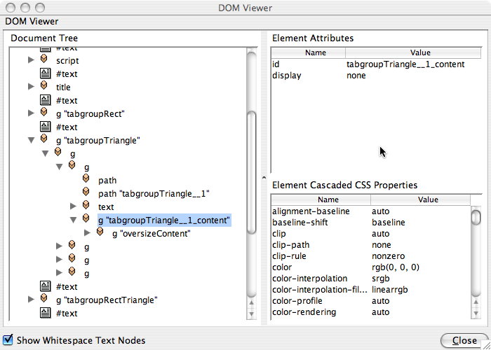

This SVG tabgroup object should assist authors of SVG webapplications in creating user interfaces.
Why should you create SVG only web applications? Advantages of SVG only applications are flexiblity (you can control every single aspect of a SVG GUI element) and scalability (in SVG your userinterface elements are scalable as well). If you need a pixel-precise, scalable application, HTML is not very well suited, since HTML form elements don't scale well. SVG also potentially allows more sophisticated GUI elements than HTML provides, such as slider, dial knobs, complex colourpickers, etc. Disadvantages include complexity (more complex than using HTML form elements) and a potentially bad user experience, if your SVG GUI elements behave different than native GUI elements of the operating system the user is used to. Some browsers still don't support SVG to HTML or HTML to SVG communication. In that case you are sort of locked into doing everything with SVG in order to reach the broadest audience. Another advantage of creating SVG only applications is, that your applications also work in SVG viewers outside the webbrowser (e.g. Batik, eSVG or SVG embedded applications).
The SVG tabgroup object is free to use. If you do any substantial improvements, please send back your improvements to the author. The GUI elements of carto.net are licensed under the terms of the LGPL license and you need to distribute the license with your code. Additionally, you should create a link to carto.net in your project's "about page" or impressum. If you plan to use the GUI elements in a commercial product, please check back with the author of the GUI elements to investigate arrangements. The original URL for the tabgroup object is http://www.carto.net/papers/svg/gui/tabgroup/.
Documentation
Requirements
To use the tabgroup object, your project needs to meet the following requirements:
- it is recommended that the svg root element has a viewBox attribute set (e.g. viewBox="0 0 1024 768")
- you need to link to the following scripts in your SVG header to use the selectionList: helper_functions.js, timer.js and tabgroup.js; please note, that not all of the functions in these files are needed. The depencies to functions in the file "helper_functions.js" are listed below.
- you need to create an empty svg group element with a unique id in an appropriate position of your document tree to hold the graphics of the tabgroup object (e.g. <g "tabgroupEvents" />)
- you need to initialize the tabgroup object with e.g. var tabgroupForEvents = new tabgroup(id,parentNode,x,y,width,height,tabheight,cornerLeft,cornerRight,tabmargins,spaceBetweenTabs,tabStyles,activetabBGColor,tabwindowStyles,tabtextStyles,tabTitles,activeTabindex,hideContent,functionToCall); as described below
Features
- the tabgroups can be individually styled using self-chosen presentation attributes
- tabs may have rectangular, round or triangular corners; left and right corner can have individual corner types
- tabwindow content can be hidden to allow oversize content
- callback function or objects can be called if a different tab is activated
- a method exists for activating a tab (put into foreground and made active)
- tabs can be enabled/disabled (greyed out)
- methods exist for inserting, appending and removing contents to tabwindows
- multiline tabs are allowed (separated with "\n")
Dependencies on external functions
- tabgroup.js:
- all of the objects and functions in this file are necessary
- timer.js:
- all of the objects and functions in this file are necessary
- helper_functions.js:
- all the global variables at the top of the file
Dom Structure of a tabgroup
Following is the DOM structure as it is generated by this tabgroup object for a typical tabgroup:

In the above example we see the DOM structure of the first tab in the tabgroup "tabgroupTriangle". The group with the id "tabgroupTriangle" is the parentNode. Within this group we have an additional group that holds transform (translate) parameters. If you set "x" and "y" you are actually changing the transform parameters. This means that the content of the tab can stay in a local coordinate system. Next in the hierarchy there are 4 groups, one for each of the 4 tabs. Within this group we first have a path element for the tabbackground window. Next, there is a path for the tab, followed by a text element for the tabtitle. The tabtitle text element has tspan child nodes for each line in the tab title. The final group (the one marked in the screenshot) is the group for the tab content that one can reference through .tabwindows[tabindex]["content"]. The group with the id "oversizeContent" is already content of the tab.
Constructor
The following constructor function creates the tabgroup:
var tabgroupForEvents = new tabgroup(id,parentNode,x,y,width,height,tabheight,cornerLeft,cornerRight,tabmargins,spaceBetweenTabs,tabStyles,activetabBGColor,tabwindowStyles,tabtextStyles,tabTitles,activeTabindex,hideContent,functionToCall);
Example:
//first a few style array literals
var tabStyles = {"fill":"lightgray","stroke":"dimgray","stroke-width":1,"cursor":"pointer"};
var tabwindowStyles = {"fill":"aliceblue","stroke":"dimgray","stroke-width":1};
var tabtextStyles = {"font-family":"Arial,Helvetica","font-size":15,"fill":"dimgray","font-weight":"normal"};
tabgroupRectRound = new tabgroup("tabgroupRectRound","tabgroupRectRound",200,550,340,200,20,"rect","round",10,5,tabStyles,"rgb(191,233,255)",tabwindowStyles,tabtextStyles,tabTitles,0,false,tabChanged);
The arguments are the following:
- id (String):
unique id that identifies the tabgroup
- parentNode (node reference or String):
a node reference to a group where the tabgroup geometry can be appended. Alternatively one can provide a String with the unique identifier for this group.
- x (number):
the upper left x coordinate of the corner of the tabgroup (incl. the top tabs)
- y (number):
the upper left y coordinate of the corner of the tabgroup (incl. the top tabs)
- width (number):
the overall width of the tabgroup (incl. the top tabs)
- height (number):
the overall height of the tabgroup (incl. the top tabs)
- tabheight (number):
the height of the tabs in viewBox units
- cornerLeft (String ("rect"|"round"|"triangle")):
the left corner type of the tab
- cornerRight (String ("rect"|"round"|"triangle")):
the left corner type of the tab
- tabmargins (number):
the space between the left side of the tab and the tab title in viewBox units; also controls the rounding radius or size of the triangle corners
- spaceBetweenTabs (number):
the space between two neighbour tabs in viewBox units
- tabStyles (Array literal with presentation attributes):
an array literal containing the presentation attributes of the tab; could include CSS classes; should have at least a "fill" attribute; example: var tabStyles = {"fill":"lightgray","stroke":"dimgray","stroke-width":1,"cursor":"pointer"};
- activetabBGColor (String):
a String defining the fill attribute of an activated tab
- tabwindowStyles (Array literal with presentation attributes):
an array literal containing the presentation attributes of the tab window; could include CSS classes; example: var tabwindowStyles = {"fill":"aliceblue","stroke":"dimgray","stroke-width":1};
- tabtextStyles (Array literal with presentation attributes):
an array literal containing the presentation attributes of the tab title texts; could include CSS classes; should have at least a "font-size" attribute; example: var tabtextStyles = {"font-family":"Arial,Helvetica","font-size":15,"fill":"dimgray","font-weight":"normal"};
- tabTitles (Array of Strings):
an array of strings holding the tab titles. This array also defines the number of tabs within a tabgroup
- activeTabindex (integer, zero based):
an index nr setting the given tab to active after tabgroup creation
- hideContent (boolean, true|false):
a boolean value indicating that the tabgroup content group of inactive tab is set to hidden. A value of true triggers that the display attribute is set to none for inactive tabgroup contents
- functionToCall (function or object or undefined):
callBackFunction: you can pass a function, object or undefined. In the case of function and object the parameters returned are: the id of the tabgroup (string), the title of the active tab (String), the index nr of the active tab (number, integer). In case of an object, it calls the method .tabActivated(id,tabTitle,tabindex). In case of an undefined value, no callBack function is executed. The callBack function is executed with a slight delay (200ms) to allow the tabgroup to update the tabs before executing the callback function.
Methods
- .activateTabByIndex(tabindex,fireFunction):
activates the tab with the given tab index. The parameters are: tabindex (number, integer, zero based) and fireFunction (boolean, true|false) - indicates whether the associated callback function should be executed
- .activateTabByTitle(tabtitle,fireFunction):
activates the tab with the given tab title. The parameters are: tabtitle (String) and fireFunction (boolean, true|false) - indicates whether the associated callback function should be executed
- .moveTo(x,y):
moves the whole tabgroup to the given position (using transform statements). The parameters are: x (number) and y (number) - both numbers are in viewBox coordinates
- .resize(width,height):
resizes the whole tabgroup to the given width and height (rewriting the tabwindows). The parameters are: width (number) and height (number) - both numbers are in viewBox coordinates
- .addContent(node,tabindex,inheritDisplay):
add content and append it to the end of the tabgroup content group. The parameters are: node (node reference or String) (in case of a string it should be a unique id), tabindex (number, integer, zero based) and inheritDisplay (boolean, true|false). The last parameter controls whether we should set the display variable to inherit upon appending the content. This is often useful, since the display attribute of the groups that are appended to tabwindows are initially set to none
- .removeContent(node,tabindex):
remove content from the content group of a tabwindow. Parameters are: node (node reference or String) and a tabindex (number, integer, zero-based). In case of a String, the node should point to a unique id of the node to be removed.
- .disableSingleTab(tabindex):
disable (grey out) the given tab. The parameter is: tabindex (number, integer, zero based). As a result the disabled tab can't be activated
- .enableSingleTab(tabindex):
enable the given tab. Only has an effect, if the tab was previously disabled (greyed out). The parameter is: tabindex (number, integer, zero based). As a result the disabled tab can't be activated
- .disableAllTabs(). All tabs are disabled (greyed out)
- .enableAllTabs(). All tabs are enabled.
Useful Properties
- .activeIndex:
is the tabindex of the activated tab within a tabgroup. Data type is a number (integer), zero based.
- .id:
unique identifier of the tabgroup. Data type is a number (integer), zero based.
- .width:
the width of the tabgroup. Data type is a number (float), in viewBox coordinates.
- .height:
the height of the tabgroup. Data type is a number (float), in viewBox coordinates.
- .tabheight:
the height of the tab. Data type is a number (float), in viewBox coordinates.
- .tabGroup:
is the node reference to the parent node of the tabgroup. All tabgroup geometry is appended within this group.
- .tabwindows[tabindex]["content"]:
the content group where all content of a tabwindow should be stored. Data type is a node reference.
- .tabTitles:
is the array containing all tab titles. Data type is an array of Strings.
Version history
- 1.0 (2006-03-11): initial version
- 1.1 (2006-04-03): added ".moveTo(x,y)" and ".resize(width,height)" methods, added an additional g-element to hold transform values
- 1.2 (2006-06-19): this.parentNode can now also be of type node reference (g or svg element); fixed a small bug when "hideContent" was set to true; changed this.parentGroup and introduced this.tabGroup, introduced id for group where content can be added, id name is: this.id+"__"+i+"_content"
- 1.2.1 (2006-07-07): fixed a bug for multiline tabs (dy attribute of the tab texts). This bug was apparent when having more than two lines of text in the tabs

{kind=link}